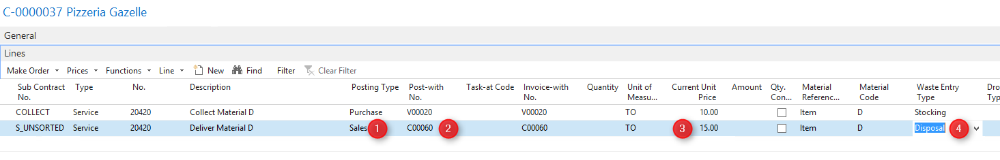
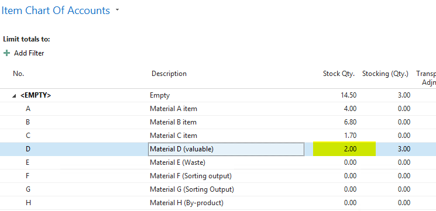
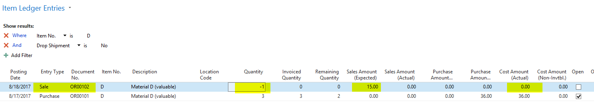
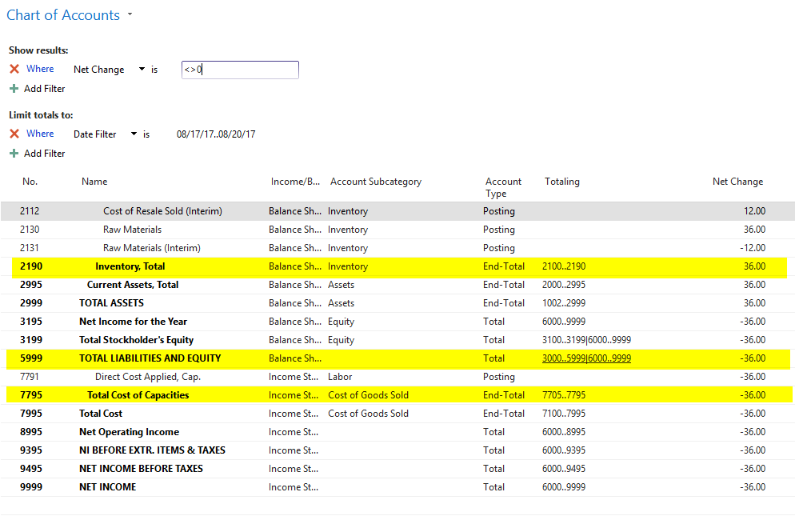
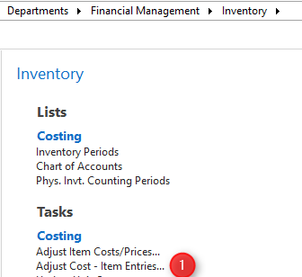
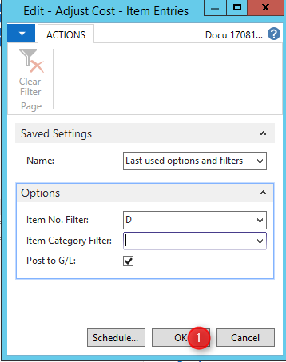
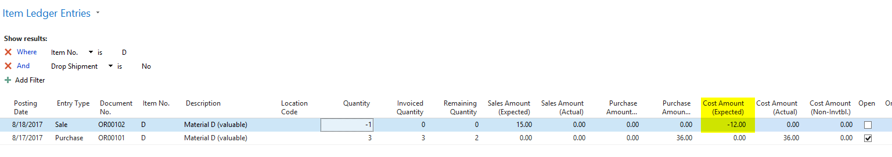
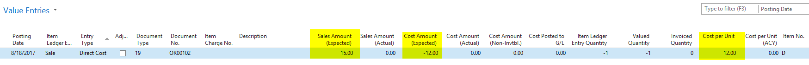
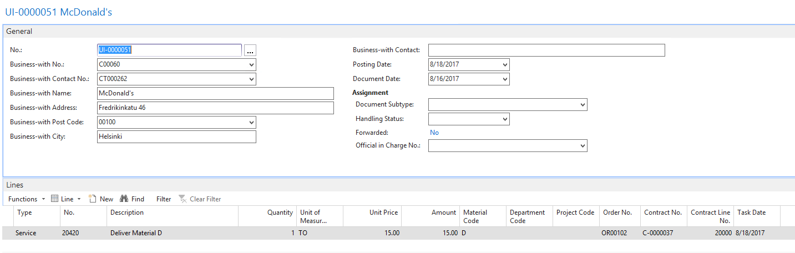
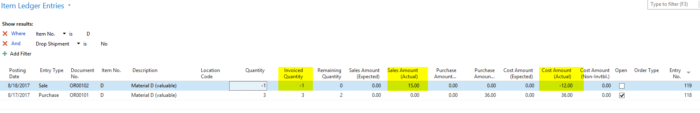

Customer and Vendor Overview
General Information
The customer card in enwis) is in large part identical to the design and function of the customer card in the default
sales and marketing
menu in Dynamics NAV. Only the differences between enwis) and the Dynamics NAV default will be explained here.

First of all, customers can be entered as contacts in the
Marketing and Sales
menu of Dynamics NAV. An existing contact can be set as a customer in the contact card by going to
Actions Create as Customer
. The customer template is necessary to do this, however.
The information is swapped and updated between the two modules.

The two fields, Post Code and City, are linked. The post code and city can be entered manually or selected from the post code list and the city list using the look-up function. When the post code is entered, the system looks for a matching city and if there is only one, automatically copies it to the corresponding field.

A special feature in enwis) not in Dynamics NAV is that the system takes into account that a post code in Germany can refer to several communities. In this case, enwis) filters the city list through the post code so that users can manually select the right community. If the city is entered first, the system looks for a matching post code and the procedure is similar.
Users can define a credit line for a customer in the Credit Limit (LCY) field. This field is routinely referred to when filling out the ledger, sales quotes, sales orders and invoices. The system checks whether the pre-set credit line has been exceeded and, if so, sends users an error message accordingly.

The Vendor No. field refers to the business partner logic in enwis). The two sides of a company are called business partners in enwis) and they can be entered into the system as customers or vendors but they are linked by a common business partner number.
With the
Create Vendor
function, users can create a vendor copy of a customer. The customer and its vendor counterpart are simultaneously linked as business partners. The number of the associated vendor is shown on the customer card.

Note:
Not all of the fields on the vendor card are automatically filled by the values of the customer (e.g. price group, payment conditions, etc.) The vendor created using this function should be reviewed and the fields corrected or supplemented.
The Blocked for New Orders field is historically relevant, because originally it was the only way in Dynamics NAV to completely block the customer. To a large part, it is similar to the _"Ship"_option in the Blocked field.

Note:
**When a customer has to be blocked for new orders, it is absolutely necessary that users check the Block Contracts w. Cust./Vend. box under the
Contract
tab in
Waste Management Setup
. If this box is not checked, users can easily create new orders from existing contracts, even for blocked customers.**

The Location Code field comes from Dynamics NAV and has little function in enwis), because any location saved in the customer is not automatically copied to the document header or document line. This field can be hidden using the configuration options in RTC.
The Shipment Method Code field also comes from Dynamics NAV, but has no meaning for the other waste management industry processes depicted in enwis). This field can be hidden using the configuration options in RTC.
The same is true for the original Combine Invoice field, which has been replaced in enwis) by a function of the same name. This field can be hidden using the configuration options in RTC.

Multiple sub-customers can be assigned to one customer in the Bill-to Customer No. field. This can be set up in two different ways in enwis).
- Multiple task sites can be entered for one customer. These task sites can be defined as invoice recipients using the Inv. Sub-Address Code field found by going to Start
Invoice Sub-Address Code
on the customer card.
- Multiple (sub) customers will be assigned to one customer in the Bill-to Customer No. field as common invoice recipients.
Users can assign an internal sorting or filter criterion to a customer using the Order Type Code field. The order types control batch processing (e.g. combine invoice, cyclical document creation, etc.). For example, the order type "Container" could encompass all rental orders in one invoice run.

Checking the Not Invoicing box blocks the customer completely from invoicing. Order lines that refer to the customer are set to "Invoice = No" and therefore not cleared. This setting is especially practical for so-called "dummy customers" to be reproduced through internal transactions or cash transactions.

A related function is found in the On Hold field. Up to three characters can be entered here (e.g. the initials of the person in charge). When the On Hold field is initialed, the customer is excluded from combine invoices and no collection letters will be sent. In Dynamics NAV, this field is only there to control collection runs. In enwis) it works with a somewhat different logic. A line code in the field blocks customer sales orders that have not yet been invoiced from combine invoicing.

Customers can be assigned a price group using the Price Group field. enwis) only determines the price group using the price group matrix (see corresponding training materials under the topic of Pricing). Strictly speaking, this makes the Price Group field superfluous. It only serves to help users avoid the complex logic behind the price group matrix and assign a price group directly to the customer.

The Rental Invoice Grp. Code field is used for equipment rental invoices. Rental invoice groups can be set up by going to
enwis) Services - Equipment - Rental Invoice - Rental Invoice Groups
. The rental invoice group code can be assigned to every customer, vendor, task site, order address, and job.
The combination of a equipment group and the rental invoice group in the rental invoice matrix serves to ascertain an invoice method for billing the equipment (normally a container).
A discount group can be assigned to each customer using the Discount Group field. In contrast to the price group, it is not possible for the system to automatically issue customers or task sites a discount group.

The
Payments
tab does not contain any special features of enwis); rather, it holds all the standard functions of Dynamics NAV (see the corresponding training materials for Dynamics NAV for more information). The same applies to the
Export
tab.
The Waste Producer No. field refers to the official producer number that must be applied for according to the Closed Substance Cycle Waste Management Act for each producer site code if it accumulates more than 2 tons of hazardous waste. The producer number can be applied for at the responsible government agency.

Customers can be categorized into business relation types using the Business Relation Code field. These business relationship types are relevant for things like multi-reports. Multi-reports are generated from each order line, e.g. sales order confirmations, delivery orders, assignment faxes, etc.
A multi-report can be called up directly from the sales order by going to
Actions
Print Multi-Report
. The business relation category can be used, for example, to signal the system to send the assignment to the subcontractor (= vendor) per multi-report by setting the business relation category for this vendor to "Carrier". In contrast, the customer receives an sales order confirmation.

Users can save an employee in the Responsible Employee field who acts as the primary account representative, e.g. as the project head or in customer accounting.
The Duration and Distance fields refer to the distance to the customer and the time needed to get there and can be relevant for preparing sales quotes, route scheduling, etc. It is more practical, however, to save these two fields on the task sites of the customer.
The Classification field indicates whether the customer is an internal or a municipal customer. The Internal option is used to indicate that the customers are associated companies and the like. This field can be used to filter the customers for viewing and reports (e.g. totals and balances) according to whether they are internal or external.
When the Municipal classification is selected, the enwis) Public menu becomes available for this customer. Task sites generated for this customer are automatically entered as so-called waste management objects (= municipal task sites).

The Various Customer field typically serves to manage one or more dummy customers. Such a dummy can be used, for example, to clear cash transactions. Checking the Various Customer box prevents the system from otherwise looking to the customer's master data during combine invoicing.
The fields under the heading Bal. Account Lines can be used to set which order line entries will be copied over from the original order line when the G/L line is entered. In other words, when there is a transaction with two partners, for example, the sale is recorded in one order line and enwis) can use the information in this line to automatically show the purchase in a second order line.
The
Selection Criteria
function can be called up in enwis) by going to
navigat
Selection Criteria
. Selection queries can be used to easily compile and query complex information in the database.
Example: Which ISO-certified transporter is allowed to transport hazardous materials to Italy?
Such queries can be pre-defined in enwis) or compiled on an ad-hoc basis. The results can be shown and copied over into the current documents or ledger.
Click on the
Task Sites
icon to show the task sites of the current customer. The list has already been filtered to only those task sites associated with this customer.

Click on the
Invoice Sub-Address
field to enter additional customer billing addresses that differ from the actual customer address (e.g. the address of task sites). These alternative addresses should not be mistaken for the addresses saved in the Bill-to Customer No. field under the
Invoicing
tab.
A different customer is defined as the
invoice recipient
in the Bill-to Customer No. field. The invoice sub-addresses is merely a place to store
alternative addresses
for invoice dispatch. When these alternative addresses need to be used, the address in the Inv. Sub-Address Code field should be entered into the corresponding contract or order lines.

A kind of translation table can be set up using the service description.
This translation table defines how individual services should be described for specific customers. The designations in the service catalog are customer-specific and might also be assigned explanatory text. Examples of the use of service descriptions include:
Material names can be simplified so that laypersons understand them.
The customer's individual vocabulary can be used.
Materials can be described in ways that make them seem more or less valuable.
The service descriptions and text components are automatically copied into sales quotes, contracts, sales orders, and invoices.
It can be helpful to save reference catalogs for the customer and its task sites.

The positive catalog contains a list of waste materials (per the ordinance) and services that may be posted to the relevant task sites, order addresses, locations, or weighbridges. In contrast, the negative catalog contains a list of materials that may not be posted to the given task sites, order addresses, locations, or weighbridges.

Click on the Container icon to see the containers sent to the customer.

Clicking on the Equipment Ledger Entries icon opens a list already filtered to those associated with the customer. It shows all containers, regardless of which of the customer's task sites they are in use at.
Invoice creation, as part of combine invoicing, can be managed by going to Navigate Sales
Invoice Layout
. Combine invoicing invoices all of the completed orders for defined period of time. The invoice layout defines how the customer's numerous order lines will be sorted on an invoice or credit note and made more transparent there through the use of additional information. Special features or needs of the customer can also be taken into account with the invoice layout, e.g. generating one invoice per task site.
Invoice pre-texts and post-texts are a convenient way to communicate additional information.

They allow users to automatically insert lines of text before and after other elements in all generated invoices and credit notes. The pre-texts and post-texts appear automatically in the unposted invoices and credit notes either before or after all other lines. They can be saved for all customers and task sites, contracts and jobs.
Waste transfer notes can be called up for the customer by clicking on the
Waste Transfer Note
icon. According to the Ordinance on Waste Recovery and Disposal Records, the waste transfer note identifies that the company has a permit to handle the intended waste management of hazardous waste material. Therefore, the waste transfer note is not a record of the correct disposal of a waste material; rather, it is the official permit to handle the waste management of a specific quantity of a specific waste material in a specific way.

Customer contracts and sales orders can be called up by clicking on the Contracts and Sales Orders icons. This brings up a filtered list of these documents associated with the customer. All sales order editing functions are available here.

Users can view a list of service errors by going to Navigate
Sales
Service Errors
. The Service Errors function can be used to document service errors related to an order in the corresponding ledger entries. A practical example of this would be a customer who orders the pickup of pure construction waste, but in fact delivers contaminated construction waste, which has an impact on the waste management costs and the waste management method. In such cases, users should not simply change the service number in the sales order; rather, this should be described as a service error, so that it can be statistically analyzed by sales and operations.